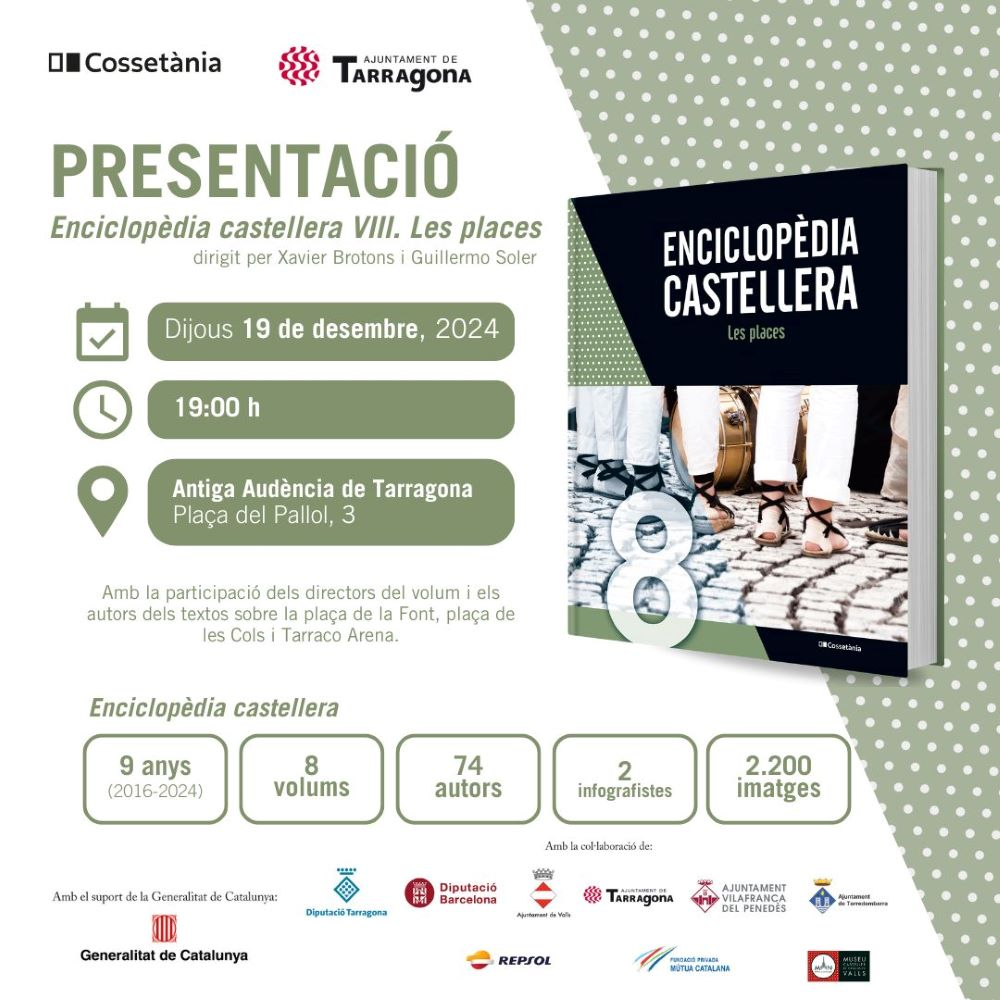

PROPERS ESDEVENIMENTS
Descobreix els esdeveniments culturals més destacats que tindran lloc a Tarragona. Des de concerts i exposicions fins a festivals i activitats familiars, aquí trobaràs tota la informació per gaudir de la cultura de la ciutat. No et perdis cap cita!
Consulta el programa anual complet d'activitats culturals a Tarragona i planifica la teva agenda amb antelació
Itineraris pel MNAT: Vida i mort a Tàrraco
- Què: Patrimoni i història
- Quan: 15-12-2024
- Localització: Museu i Necròpolis Paleocristians
Tió de Nadal
- Què: Cultura popular i festes
- Quan: 17-12-2024 al 17-12-2024
- Localització: Plaça Cuba, Sp i Sp
Un Nadal per a tothom - Cinema
- Què: Cinema
- Quan: 17-12-2024, 20:30
- Localització:Biblioteca Pública de Tarragona
Visita del Patge Reial
- Què: Activitats familiars
- Quan: 18-12-2024, 17:30
- Localització: Centre Cívic Municipal de Bonavista
Concert de Nadal a la URV
- Què: Música
- Quan: 18-12-2024, 20:30
- Localització: URV - Campus de Catalunya
Presentació de l'Enciclopèdia castellera

- Què: Lletres
- Quan: 19-12-2024, 19:00
- Localització: Antiga Audiència
Programa anual
| Cavalcada de Reis | 5 de gener |
| Carnaval | del 10 al 21 de febrer |
| Teatres de Tarragona | Temporada primavera 2024: març-juny |
| Tarragona Sona Flamenc | del 4 al 19 de març |
| Primavera Literària | març-juny |
| Setmana Santa | del 2 al 10 d'abril |
| Sant Jordi | 23 d'abril |
| Dixieland. Festival de Jazz | del 25 al 28 d'abril |
| Tarraco Viva | del 13 al 26 de maig |
| Sant Joan | 23 i 24 de juny |
| Concurs Internacional de Focs Artificials | del 5 al 8 de juliol |
| Festival Camp de Mart | de finals de juny a principis d’agost |
| Festival sota la Palmera | juliol - agost |
| Sant Magí | del 12 al 19 d’agost |
| Festival Internacional de Teatre | setembre |
| Onze de Setembre | 11 de setembre |
| Sant Tecla | del 15 al 24 de setembre |
| Concurs de Castells | Torredembarra, 25/09 i Tarragona, 01/10 |
| REC. Festival de Cinema | desembre |
| Concurs de Castells | Home dels Nassos: 31 de desembre |
| Convocatòria dels Premis Literaris | octubre - gener |
| REC. Festival de Cinema | desembre |
| Home dels Nassos | 31 de desembre |
| Tardor Literària: | octubre - desembre |
| Magatzem reial | del 27 al 30 de desembre |